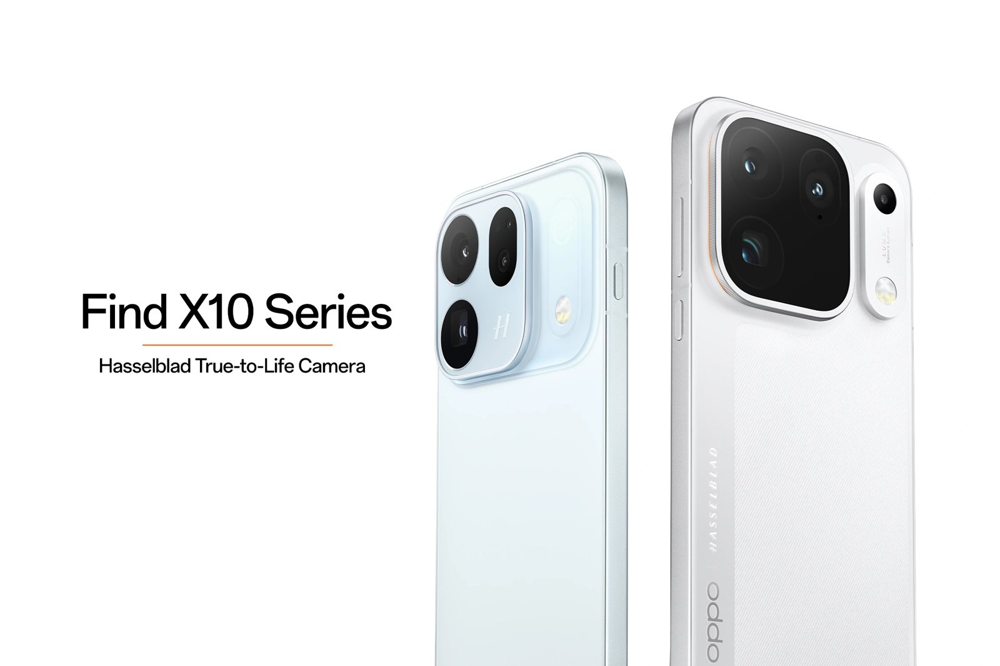

تقنية6 دقائق
أوبو Find X10 وFind X10 Pro Max عالميًا: بطارية 7,150mAh في أوروبا وسعر يبدأ من 1,099 جنيهًا
أطلقت أوبو يوم 21 أكتوبر 2026 هاتفي Find X10 وFind X10 Pro Max عالميًا في حدث أقيم في مايوركا بإسبانيا. الهاتفان أُعلنا في الصين في سبتمبر، والآن يصلان إلى أوروبا وبريطانيا أولًا، ويعملان بنظام ColorOS 17.
لم يشمل الإطلاق العالمي Find X10 Pro ولا Find X10 e. بيان أوبو الرسمي يذكر Find X10 وFind X10 Pro Max فقط.

ما الذي تغيّر عن النسخة الصينية؟
الفرق الأبرز هو البطارية. النسختان الصينيتان تأتيان ببطارية 8,000mAh (راجع مقالَينا عن Find X10 وFind X10 Pro Max في الصين)، أما صفحات المواصفات الرسمية في بريطانيا فتذكر 7,150mAh للهاتفين. بيان أوبو العالمي يقول "حتى 8,000mAh"، وصفحة المواصفات الإماراتية تذكر 8,000mAh، أي أن السعة تختلف حسب السوق.
- البطارية: 7,150mAh في بريطانيا وأوروبا، و8,000mAh في الإمارات والصين.
- الوزن: الأخف في بريطانيا (210 غ لـ Find X10) مقابل 216 غ في الإمارات، و226 إلى 228 غ لـ Pro Max في بريطانيا مقابل 233 إلى 235 غ في الإمارات.
- العلبة: النسخة البريطانية بلا شاحن، والإماراتية تضم شاحنًا وغطاءً واقيًا.
- الإصدارات: عالميًا ذاكرة 12GB وتخزين 512GB لـ Pro Max، بينما في الصين خيارات متعددة.
- الشحن والمعالج: نفس الأرقام في كل الأسواق، 80W سلكي و50W لاسلكي، وDimensity 9600M في Find X10 وDimensity 9600 Pro في Pro Max.
المواصفات العالمية: مقارنة كاملة
| المواصفة | Find X10 | Find X10 Pro Max |
|---|---|---|
| رقم الطراز | CPH2911 | CPH2913 |
| الشاشة | 6.59 بوصة AMOLED مرنة، FHD+ بدقة 2768×1272، كثافة 462ppi | 6.78 بوصة AMOLED مرنة، FHD+ بدقة 2772×1272، كثافة 450ppi |
| معدل التحديث | LTPO من 1 إلى 120Hz، وحتى 144Hz في بعض الألعاب | LTPO من 1 إلى 120Hz، وحتى 144Hz في بعض الألعاب |
| السطوع | 3,600 nits ذروة، و2,000 nits في وضع HBM | 3,600 nits ذروة، و2,000 nits في وضع HBM |
| تعتيم PWM والألوان | حتى 3,840Hz، و95% من BT.2020، و10-bit | حتى 3,840Hz، و95% من BT.2020، و10-bit |
| المعالج | MediaTek Dimensity 9600M بدقة 3nm | MediaTek Dimensity 9600 Pro بدقة 2nm |
| الذاكرة والتخزين | 12GB LPDDR5X + 512GB UFS 4.1 (صفحة المواصفات البريطانية) | 12GB LPDDR5X + 512GB UFS 4.1 (الإصدار الوحيد عالميًا) |
| الكاميرا الرئيسية | 200MP f/1.6 مع OIS | 200MP f/1.5 مع OIS، مستشعر ISOCELL HPC بقياس 1/1.28 بوصة |
| الكاميرا الواسعة | 50MP f/2.0 بزاوية 120° | 200MP f/2.2 بزاوية 124°، مستشعر 1/1.56 بوصة |
| الكاميرا المقرّبة | 200MP f/2.6 مع OIS، وتقريب بصري 2.8x في الفيديو | 200MP f/2.1 مع OIS، وتقريب بصري 3x في الفيديو، وتركيز من 10 سم |
| كاميرا الألوان (Multi-Spectral) | 3.2MP | 3.2MP |
| الكاميرا الأمامية | 50MP f/2.0 | 50MP f/2.0 |
| الفيديو | 4K 60fps بكل الكاميرات، و8K 30fps و4K 120fps بالرئيسية والمقرّبة | 8K 30fps و4K 120fps بالكاميرات الخلفية الثلاث |
| البطارية (أوروبا/بريطانيا) | 7,150mAh (6,960mAh مقننة) | 7,150mAh (6,960mAh مقننة) |
| البطارية (الإمارات) | 8,000mAh (7,770mAh مقننة) | 8,000mAh (7,790mAh مقننة) |
| الشحن السلكي | 80W SUPERVOOC | 80W SUPERVOOC |
| الشحن اللاسلكي | 50W AIRVOOC | 50W AIRVOOC |
| الشاحن في العلبة | لا في بريطانيا، نعم في الإمارات | لا في بريطانيا، نعم في الإمارات |
| الحماية | IP66 وIP68 وIP69 | IP66 وIP68 وIP69 |
| البصمة | بالموجات فوق الصوتية تحت الشاشة | بالموجات فوق الصوتية تحت الشاشة |
| الشبكات 5G | n1/2/3/5/7/8/12/18/20/25/26/28/38/40/41/48/66/75/77/78/79 | نفس النطاقات مع n71 (وLTE B71) |
| الاتصال | Wi-Fi 7، Bluetooth 6.2، NFC، IR، eSIM | Wi-Fi 7، Bluetooth 6.2، NFC، IR، eSIM |
| المنفذ | USB-C بمعيار USB 3.2 Gen 1 | USB-C بمعيار USB 3.2 Gen 1 |
| النظام | ColorOS 17 | ColorOS 17 |
| الأبعاد | 156.51 × 74.29 × 8.35 مم | 161.32 × 76.57 × 8.40 مم |
| الوزن | 210 غ (بريطانيا)، 216 غ (الإمارات) | 226/228 غ (بريطانيا)، 233/235 غ (الإمارات) |
| الألوان | Glacier Blue، Glow Coral، Mist Grey (في الإمارات: Mist Grey وGlacier Blue فقط) | Titanium Grey، Luna White |
المصدر: صفحات المواصفات الرسمية على oppo.com (بريطانيا والإمارات) وبيان أوبو الصحفي. السطوع 3,600 nits ونطاق الحماية IP66/68/69 من البيان، أما الصفحة الأوروبية فتعرض IP68 فقط بسبب قواعد الملصق الأوروبي، مع إشارة إلى اجتياز IP69.
الأسعار الرسمية والتوفر
| السوق والإصدار | السعر الرسمي | بالدولار | بالريال السعودي | المصدر |
|---|---|---|---|---|
| بريطانيا: Find X10 (يبدأ من) | 1,099 جنيه | 1,469$ | 5,507 ريال | متجر OPPO البريطاني |
| بريطانيا: Find X10 بسعة 512GB | 1,250 جنيه | 1,670$ | 6,264 ريال | GSMArena (غير مؤكد رسميًا) |
| بريطانيا: Find X10 Pro Max بسعة 12GB + 512GB | 1,499 جنيه | 2,003$ | 7,512 ريال | متجر OPPO البريطاني |
| أوروبا: Find X10 بسعة 256GB | 1,300 يورو | 1,459$ | 5,473 ريال | GSMArena (غير مؤكد رسميًا) |
| أوروبا: Find X10 بسعة 512GB | 1,500 يورو | 1,684$ | 6,315 ريال | GSMArena (غير مؤكد رسميًا) |
| أوروبا: Find X10 Pro Max بسعة 512GB | 1,800 يورو | 2,021$ | 7,578 ريال | GSMArena (غير مؤكد رسميًا) |
| الإمارات | - | - | - | متجر OPPO الإماراتي: قريبًا |
| السعودية | - | - | - | لا توجد صفحة للهاتفين على موقع OPPO السعودي |
سعر الصرف المستخدم: 1 جنيه = 1.3363 دولار = 5.0112 ريال سعودي، و1 يورو = 1.1227 دولار = 4.2101 ريال سعودي (ExchangeRate-API، تحديث 21 أكتوبر 2026). الأسعار المحوّلة تقريبية، ولا تشمل الضرائب أو الشحن أو رسوم الاستيراد. الأسعار الأوروبية والبريطانية تشمل ضريبة القيمة المضافة المحلية.
متجرا أوبو في ألمانيا وفرنسا ما زالا في مرحلة الحجز المسبق ولا يعرضان السعر بعد، لذلك الأرقام الأوروبية من GSMArena. في بريطانيا يعرض المتجر الرسمي 1,499 جنيهًا لـ Pro Max ويبدأ سعر Find X10 من 1,099 جنيهًا، مع خصم 100 جنيه لفترة محدودة وهدية اختيارية.
تقول أوبو إن الهاتفين سيتوفران عالميًا ابتداءً من أواخر أكتوبر عبر متاجرها والموزعين المعتمدين. شروط الحجز في بريطانيا تطلب سداد المبلغ المتبقي قبل 27 أكتوبر.
تعارضات في البيانات
- سعة Find X10: GSMArena يذكر إصدارًا بسعة 256GB بسعر 1,100 جنيه و1,300 يورو، بينما صفحة المواصفات البريطانية الرسمية تذكر 12GB + 512GB فقط، والمتجر البريطاني يعرض "يبدأ من 1,099 جنيه".
- المعالج: بيان أوبو وصفحات المواصفات تذكر Dimensity 9600M لـ Find X10 وDimensity 9600 Pro لـ Pro Max، بينما يوحي خبر GSMArena بأن الهاتفين يستخدمان 9600 Pro. اعتمدنا البيانات الرسمية.
- البطارية: البيان العالمي يقول "حتى 8,000mAh"، لكن صفحات بريطانيا تذكر 7,150mAh وصفحات الإمارات 8,000mAh.
ملاحظة للمشتري في الخليج
- الإمارات: الهاتفان مدرجان في متجر أوبو الإماراتي بحالة "قريبًا"، دون سعر أو موعد حتى الآن، والنسخة الإماراتية ببطارية 8,000mAh.
- السعودية: لا توجد صفحة للهاتفين على موقع أوبو السعودي حتى الآن، ولا سعر رسمي معلن.
- خدمات Google: النسخة العالمية تأتي بخدمات Google، أما الصينية فتحتاج إلى إعداد يدوي وقد لا تدعم بعض الخدمات.
- الضمان: النسخة المستوردة من الصين أو أوروبا لا تحمل ضمانًا محليًا، بعكس النسخة الرسمية عند وصولها.
- الشبكات: النسخة العالمية تدعم نطاقات 5G المستخدمة في الخليج مثل n78، لكن تحقق من مشغلك. الصينية لم نتحقق من نطاقاتها.
- البطارية: إذا كانت البطارية أولويتك، انتظر النسخة الخليجية (8,000mAh في الإمارات) بدل استيراد الأوروبية (7,150mAh).
الخلاصة
Find X10 Pro Max هو أول هاتف بثلاث كاميرات خلفية بدقة 200MP، وFind X10 يقدم كاميرتين بدقة 200MP بحجم أصغر. الإطلاق العالمي يحمل نفس المعالج والشحن، لكن ببطارية أصغر في أوروبا وأسعار مرتفعة. لم تصلنا تجارب ملاك للنسخة العالمية بعد، وسنضيف الاختبارات عند توفرها.
#midroid5G #OPPO #FindX10